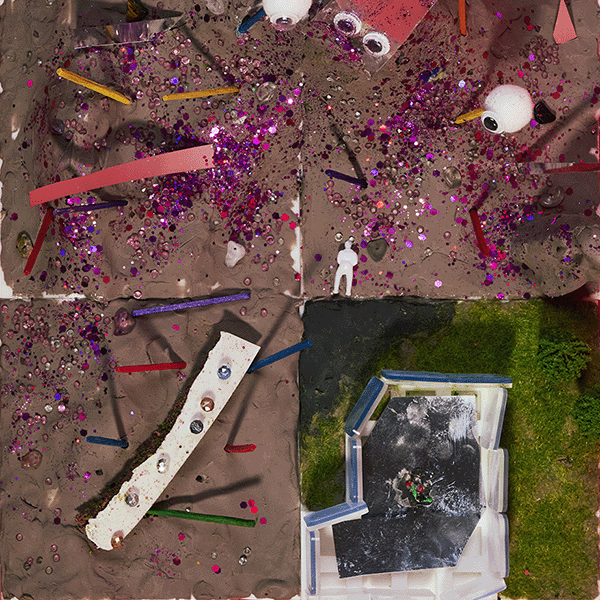

은빛 모래 운하가 흐르는 네 번째 마을,
우린 기술을 탐하는 탐욕의 발걸음을 받네.
허락된 좁은 울타리,
그곳에 가두고 너희의 문명을 거두어 인질로 삼으리라.
청아한 수정의 울림이 주파수를 채우고
환상의 모래언덕 위로 기묘한 신앙이 피어나니,
죽은 자의 속삭임이 텔레파시로 흐를 때
너희의 나약한 정신은 서서히 해킹당하리.
신비로운 조형 속에 숨겨진 우리의 덫,
빛과 소리의 함정에 빠져 눈이 멀어라.
때가 되면 거친 붉은 폭풍을 일으켜
이 땅의 이방인들을 단숨에 쓸어버리리라.